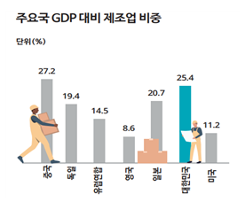
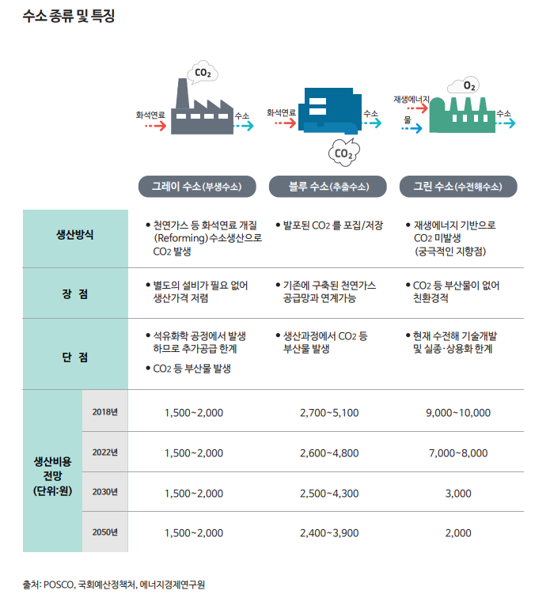

MIT Technology Review
탈탄소화
<각 나라별 정책>
1.한국
① 현황
한국 정부는 2050년까지 탄소중립을 실현하겠다고 선언하였으며 UN에 제출할 장기 저탄소 발전전략 (LEDS)을 확정하고 2021년까지 관련 내용을 법제화하겠다는 목표를 설정하였다. 12월 7일에 발표된 '2050 탄소중립 실현 추진전략'에서는 경제구조의 저탄소화, 신 유망 저탄소산업 생태계 조성, 탄소중립 사회로의 공정전환이라는 3대 정책방향을 설정하고 10대 과제를 선정하였다.
② 국내 탈탄소화 전략
1) 높은 제조업 비중과 탄소배출량 : 한국은 서비스업 비중이 높은 미국이나 유럽에 비해 제조업 비중이 2~3배 높으며, 특히 철강, 석유화학 등 탄소 다배출 업종의 비중이 높아 탄소중립 추진 이전에 기업과 국민의 부담을 먼저 고려해야 하는 상황이다. 한국은 2018년 기준 이산화탄소 배출량 세계 8위, 석탄발전 비중 40%로 국제사회에서는 '기후악당'이라는 평가를 받기도 했다.

1) 기술적 제약 : 중심 역할인 수소에너지는 태양광과 풍력의 간헐성으로 인한 기상 여건을 해결할 수 있는 에너지이지만 에너지 체계의 중심역할을 수행하기엔 시간이 소요될 전망이다. 그린 수소 생산을 위한 수전해 설비 비용이 높아 그레이수소와 블루수소에 비해 비용 측면에서 열위에 있다. 그리고 한국은 다른 국가들 보다 수전해 수소 설비 관련 기술력도 열위에 있는 상황이라 비용적 문제를 해결하고 경제성을 갖추기까지는 시간이 걸릴 것으로 예상된다. 에너지 전환을 위해 꼭 필요한 기술인 수소환원제철과 이산화탄소 포집 및 활용(CCU) 기술 등도 아직까지는 상용화에 한계가 존재한다. 수소환원제철은 기술개발의 성공과 수소의 안정적 공급기반 구축이 핵심이나, 이제 기반 구축을 막 시작하는 단계로 기술의 실질적 활용은 요원한 상황이다. 그리고 CCU 기술의 경우 경제성을 확보한 포집제 개발 및 포집 공정의 상용화에 아직 성공하지 못하고 있다.

③ 에너지 부문 탈탄소화
③ 깨끗하고 안전한 에너지 공급을 위해 ‘제8차 전력수급 기본계획’을 수립하였고, 2030년까지 재생에너지 발전비중을 20% 수준으로 확대하는 것을 골자로 한다. 정책목표 달성을 위해서는 2016년 말 대비 발전비중 3배, 설비용량 4배 확대가 필요한 상황이다.
참고문헌1
참고문헌2